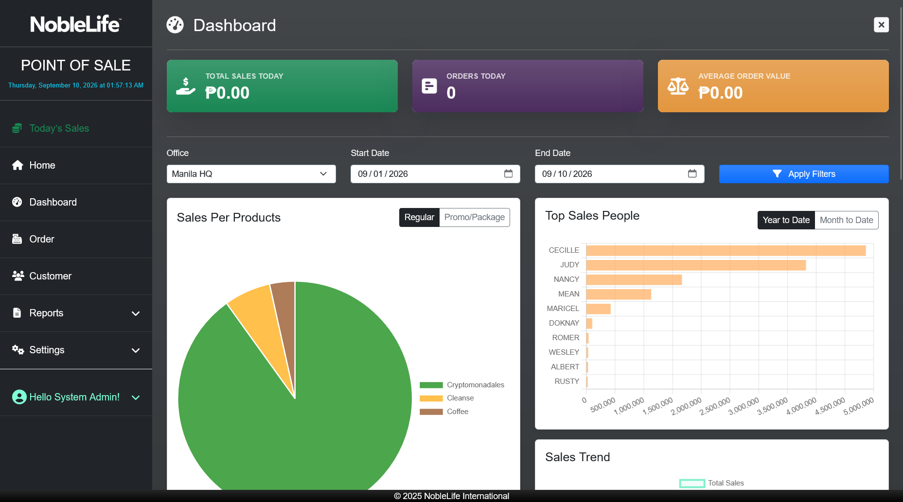
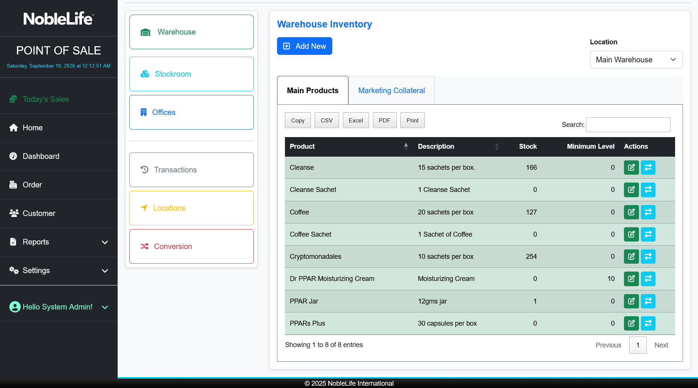
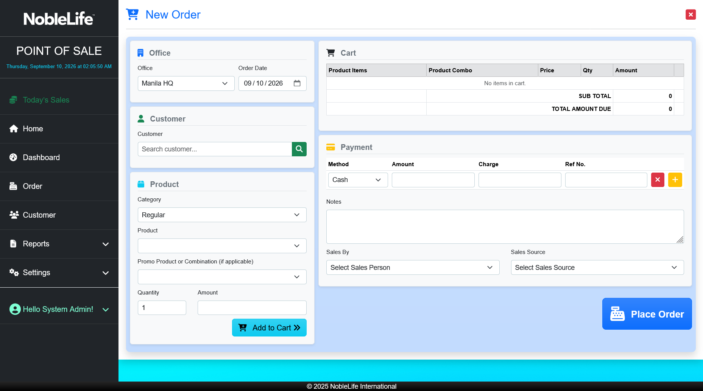
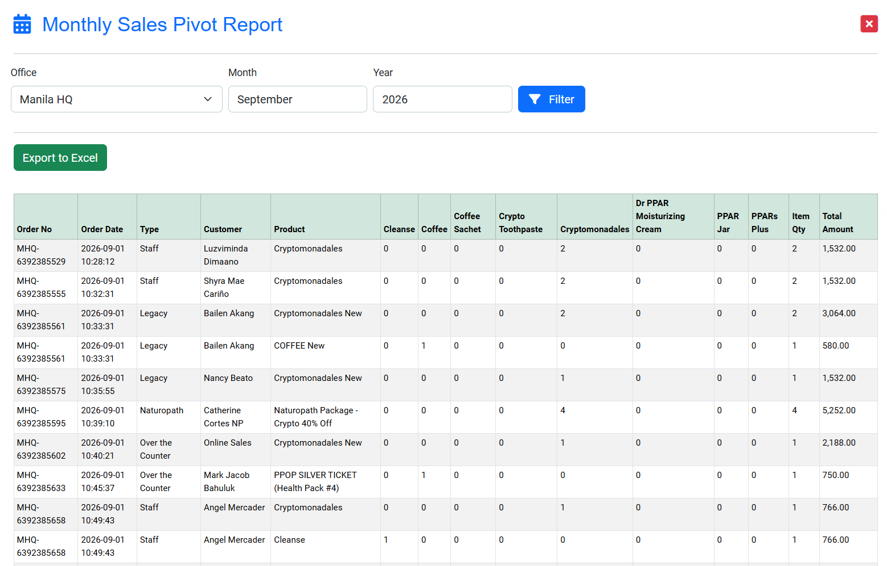
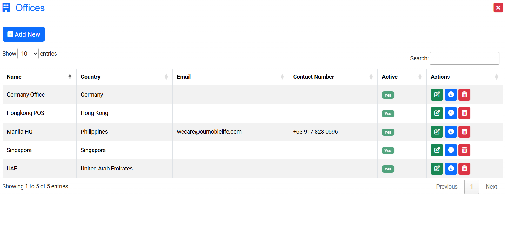
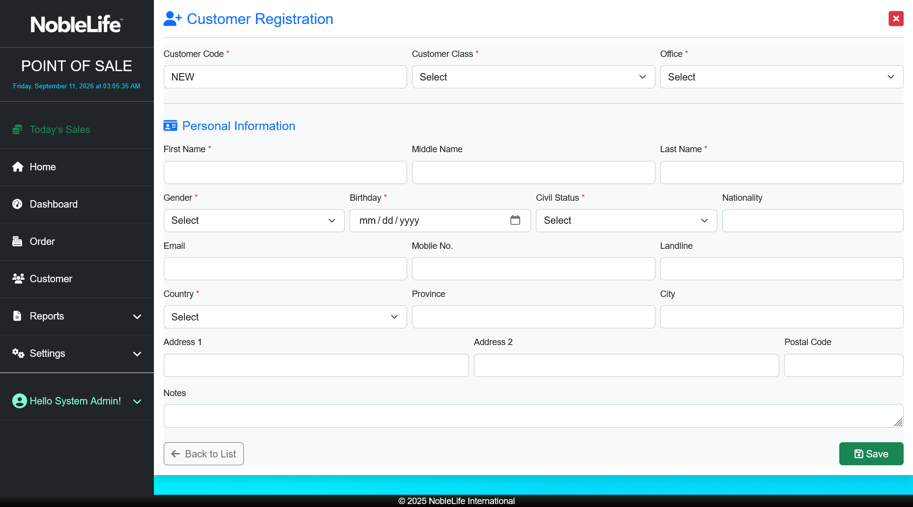

POS Application
A single, unified Point of Sale platform for NobleLife International that replaced four separate legacy PHP applications, bringing ordering, administration, reporting, and inventory into one secure, easy-to-use system.
Overview
NLI-POS is the web-based system NobleLife International uses to run day-to-day sales operations across its offices. It handles the full order lifecycle, from customer records and order entry to payment, inventory, and reporting, in one application with role-based access for sales staff, managers, and administrators.
The Problem
NobleLife's previous system was built on legacy PHP 5 and had grown into four separate applications: one to take and record orders and customers, one for admin and maintenance, one for reports, and one for inventory.
Staff had to switch between apps to complete everyday work, each with its own login and interface. The aging PHP 5 platform was also hard to maintain and no longer supported, which made adding features and keeping the system secure increasingly difficult.
- Fragmented workflow: Orders, inventory, admin tasks, and reports lived in different apps.
- Duplicated effort: Users and data were maintained in several places.
- Outdated technology: PHP 5 was end-of-life and difficult to extend safely.
- Hard to use: The interfaces were inconsistent and not designed for quick daily operation.
The Solution
I consolidated the four legacy apps into one ASP.NET Core application built with Razor Pages and MySQL. Ordering, customer records, administration, inventory, and reporting now share a single login, a single database, and a consistent interface, with role-based access controlling what each user can see and do. The rebuild also brought stronger security practices and a cleaner, more user-friendly experience for daily use.
Before
4 separate PHP 5 apps: POS, Admin, Reports, Inventory
After
1 unified ASP.NET Core app with shared login, data, and role-based access
Order Management
Streamlined checkout process with real-time order processing and receipt generation.
Inventory Tracking
Automated stock level updates and low-inventory alerts across all product categories.
Multi-location Support
Centralized management for multiple branches with localized data isolation and global reporting.
Customer Profiles
Integrated CRM features to track purchase history, loyalty points, and preferences.
Role-Based Access Control
Granular permissions for cashiers, managers, and administrators to ensure data security.
Operational Reporting
Comprehensive dashboards for daily sales, inventory turnover, and staff performance.
Screenshot Gallery






Architecture & Technical Highlights
- Role-Based Authorization: Implemented secure access controls ensuring users only interact with permitted modules based on branch and role.
- Multi-Location Data Scoping: Designed a multi-tenant architecture to handle data from different international branches securely with time zone normalization.
- Audit Trail: Developed a comprehensive logging system to track all sensitive transactions, voids, and administrative changes.
- Optimized Queries: Used Entity Framework Core with raw SQL optimizations for large inventory datasets and complex pivot reporting.
Challenges & Solutions
Four independent apps with their own data and logic had to become one system without disrupting daily operations.
Mapped the responsibilities of each legacy app, designed one shared data model, and rebuilt each area as a module within the new application.
One consistent system that staff use for ordering, administration, inventory, and reporting.
Reports lived in a separate app, so sales and inventory figures had to be pulled from different places.
Built a specialized reporting service using EPPlus and ClosedXML to generate pivot-style reports and Excel exports with time zone normalization for international offices.
Reporting is now part of the same application, using the same data as ordering and inventory.
Results & Impact
This application is an internal tool for NobleLife International. The live system, production data, and source code are not public. Screenshots shown here use sample or redacted data to protect business confidentiality.